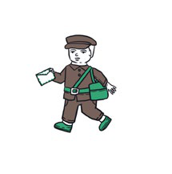
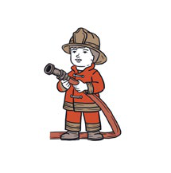
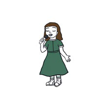
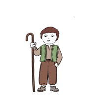
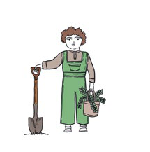

DEFINICIONES
En esta actividad, cada estudiante debe identificar una palabra a partir de una definición.
- La educadora presenta y nombra las tarjetas con imágenes.
- Luego formula una definición sin indicar a qué imagen corresponde.
- Cada estudiante identifica la tarjeta que responde a la definición.
- Al finalizar, se escriben las palabras en el cuadernillo.
- CARTERO: persona que reparte el correo.
- BOMBERO: persona que apaga incendios.
- CANTANTE: persona que canta.
- PASTOR: persona que cría cabras u ovejas.
- JARDINERO: persona que cuida los jardines.
CARTERO, BOMBERO, CANTANTE, PASTOR, JARDINERO
 |  |  |
 |  |